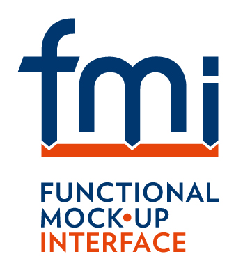

FMI Kit is a Simulink toolbox to import and export Functional Mock-up Units (FMUs) that conform to the FMI Standard. It provides an S-Function with a graphical user interface and a MATLAB API that can import existing binary or C code FMUs into Simulink and set parameters and options. It also contains two TLC targets for Simulink Coder to export Simulink models as FMUs that can be imported into 100+ third-party applications that support FMI. FMI Kit supports...
See the changelog for a list of changes in this version.
For updates visit the project on GitHub.
Add FMUs to Simulink models using the FMU library block
Create FMUs from Simulink models (requires Simulink Coder)
Copyright © 2019 Dassault Systèmes. The code is released under the 2-Clause BSD license.